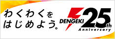
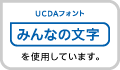

<footer id="bottom-footer">
	<ul class="links">
		<li><a href="http://25th.dengeki.com/"></a></li>
		<li><a href="http://dengekibunko.dengeki.com/"></a></li>
		<li><a href="http://bunko.maho.jp/"></a></li>
		<li><a href="http://asciimw.jp/award/taisyo/"></a></li>
	</ul>
	<div class="footer2">
		<div class="footer-logo"><a href="http://mwbunko.com/"><span class="brandlogo">メディアワークス文庫</span></a></div>
		<div class="copyright">
			<span>&copy; KADOKAWA CORPORATION 2017</span>
			<p>当ホームページに掲載の、写真、動画などの無断転載、加工など一切禁止しております。</p>
		</div>
		<ul>
			<li></li>
			<li><a href="https://minmoji.ucda.jp/"></a></li>
		</ul>
	</div>
	<a class="totop" href="#top">
		<span>ページの<br>先頭へ</span>
		
	</a>
	<script>
	$(function(){
		$(window).scroll(function(){
			if ($(this).scrollTop() > 100){
				$('.totop').addClass('on');
			} else {
				$('.totop').removeClass('on');
			}
		});
	});
	</script>
</footer>
